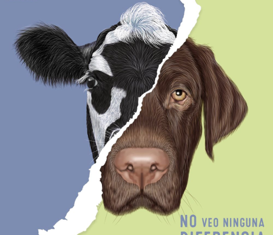

BIENVENIDOS A VEGANO VIDA
En VeganoVida, abrazamos un estilo de vida consciente y respetuoso con todos los seres vivos y el planeta. Nuestra plataforma es un oasis de inspiración para todos aquellos que desean explorar y disfrutar de la riqueza de la comida vegana. Desde recetas deliciosas y equilibradas hasta consejos sobre nutrición y sostenibilidad, estamos aquí para guiarte en tu viaje hacia una vida más saludable y ética. Explora nuestras recetas innovadoras, que demuestran que lo vegano no solo es saludable, sino también delicioso y lleno de sabor. Nuestra comunidad de amantes de la comida vegana comparte sus creaciones culinarias únicas, desde platos cotidianos hasta sorpresas gourmet que te dejarán maravillado.
A pesar de sus diferentes interacciones con los seres humanos, tanto los animales domésticos como los de campo comparten un lugar en la historia de la Tierra. Ambos despiertan nuestra empatía y respeto por el mundo natural que nos rodea. A través de ellos, aprendemos sobre la interconexión de todas las formas de vida y nuestra responsabilidad de cuidar y preservar la diversidad biológica. Tanto en la calidez de un hogar como en la vastedad de un campo abierto, estos animales nos recuerdan que, independientemente de sus roles y nuestro impacto en sus vidas, todos compartimos el mismo planeta y respiramos el mismo aire. Son recordatorios vivientes de la importancia de vivir en armonía con el mundo natural y de reconocer la belleza y la intrincada red de vida que nos rodea.
El veganismo se basa en la creencia de que todos los seres vivos merecen respeto y consideración, sin importar su especie. Este enfoque se extiende a los animales de campo, cuya existencia a menudo se cruza con actividades humanas como la agricultura y la caza. El veganismo aboga por un cambio en nuestras acciones, reconociendo que podemos coexistir con la naturaleza sin explotarla. Al abrazar el veganismo, nos esforzamos por reducir el sufrimiento de todos los seres vivos, incluidos los animales de campo. Al optar por alimentos libres de productos de origen animal, eliminamos la demanda de la cría intensiva, la caza y otras prácticas que pueden perturbar los ecosistemas naturales de estos animales. El veganismo reconoce que la compasión hacia los seres más vulnerables también beneficia a los hábitats que compartimos.